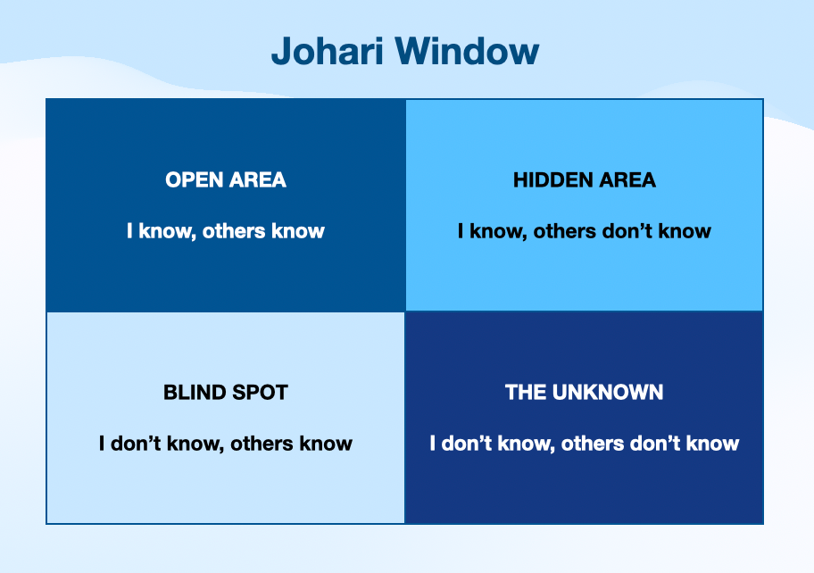

รู้จัก 4 พื้นที่ในใจผ่านโมเดล Johari Window
วันก่อน..เราได้มีโอกาสเล่าเรื่องหน้าต่างโจฮารีให้เพื่อนฟังค่ะ และจากที่เพื่อนดูสนใจเราก็เลยอยากเขียนเล่าไว้เป็นบทความหน่อย อยากให้มีคนรู้จักโมเดลนี้กันเยอะๆ ค่ะ

พวกเราก็ต่างมีพื้นที่ในใจบางอย่างที่เราเปิดเผย บางอย่างที่เราซ่อนไว้ และบางอย่างที่ตัวเราเองก็อาจไม่รู้เลยว่ามีอยู่จริง โมเดล “หน้าต่างโจฮารี” (Johari Window) จะสามารถช่วยให้เราตระหนักรู้ ทบทวน เข้าใจตัวเองและผู้อื่นได้ลึกซึ้งยิ่งขึ้น ผ่านการสำรวจ 4 พื้นที่สำคัญในจิตใจของเรากันค่ะ
หน้าต่างโจฮารี คืออะไร
คือ โมเดลที่ได้รับการพัฒนาโดยนักจิตวิทยา โจเซฟ ลุฟต์ (Joseph Luft) และ แฮร์ริงตัน อิงแฮม (Harrington Ingham) ในปี ค.ศ. 1955 จากนั้นจึงนำมาใช้ในกลุ่มช่วยเหลือตนเอง (self-help groups) และในองค์กรต่างๆ เป็นกิจกรรมเชิงประสบการณ์ (heuristic exercise) ที่ช่วยให้บุคคลได้เรียนรู้ตนเองผ่านการสื่อสารและการเปิดเผยตัวตน
ชื่อ “Johari” มาจากการรวมชื่อของผู้คิดค้นทั้งสองคน คือ Joseph + Harington
แต่ละหน้าต่างหมายความว่าอย่างไร
🟩 Open Area : I know, others know
เป็นพื้นที่เปิดเผย ทั้งเราและคนอื่นต่างก็รู้เกี่ยวกับตัวเรา เช่น นิสัย บุคลิก พฤติกรรมที่แสดงออกอย่างเปิดเผย เป็นต้น
>> หน้าต่างบานนี้จะเริ่มเปิดกว้างขยายพื้นที่มากขึ้นตามระดับความสัมพันธ์ ยิ่งสนิทสนมกัน ไว้วางใจ เปิดใจมากเท่าไหร่ พื้นที่ส่วนนี้ยิ่งขยายกว้างนั่นเอง
🟥 Blind Spot : I don’t know, others know
เป็นพื้นที่จุดบอด ผู้อื่นจะมองเห็นในตัวเรา แต่ตัวเราไม่รู้ เช่น น้ำเสียง การแสดงออก หรือทัศนคติบางอย่างที่เราไม่ทันสังเกต
>> หน้าต่างบานนี้จะแคบลงเมื่อเรารับรู้จุดบอดตัวเอง อาจจะเป็นการเปิดใจรับฟัง feedback จากคนอื่น ซึ่งเราสามารถรับรู้ และเลือกใช้ในการพัฒนาตัวเองได้ต่อไป
🟨 Hidden Area : I know, others don’t know
เป็นพื้นที่ซ่อนเร้น เรารู้เกี่ยวกับตัวเอง แต่ไม่ต้องการเปิดเผย เช่น ความกลัว ความรู้สึกบางอย่าง หรืออดีตที่ไม่อยากให้ใครรู้
>> หน้าต่างบานนี้จะแคบลงเมื่อเรากล้าที่จะเปิดเผย หรือแชร์กับผู้อื่นอย่างปลอดภัย
⬛ The Unknown : I don’t know, others don’t know
เป็นพื้นที่ที่ไม่รู้ร่วมกัน
น่ากลัวใช่ไหมคะ…. เราอาจเผลอถามตัวเองว่า มีด้วยหรือ?
สิ่งที่แม้แต่ตัวเราก็ไม่รู้ และคนอื่นก็ไม่รู้ เช่น ความสามารถที่ยังไม่ถูกค้นพบ หรือปมบางอย่างในใจที่ยังไม่ถูกรับรู้
>> หน้าต่างบานนี้จะแคบลงได้โดยการได้ลองสิ่งใหม่ๆ มีปฏิสัมพันธ์กับคนอื่นให้มากขึ้น และสะท้อนตัวเองอยู่เสมอ จะช่วยให้พื้นที่นี้ค่อยๆ เปิดเผยออกมา
ถ้าคุณกำลังอยู่ในช่วงที่อยากรู้จักตัวเองให้ลึกขึ้น หรือสร้างความสัมพันธ์ที่ดีขึ้น ลองใช้โมเดลนี้เป็นตัวช่วยดูนะคะ
เรากำลังคิดว่าจะนำโมเดลนี้ไปแชร์ให้น้องๆ ในทีมฟัง เพื่อให้ทีมเข้าใจตัวเองมากขึ้น คิดว่าน่าจะเป็นการช่วยให้พวกเราได้เปิดใจในการเรียนรู้และพัฒนาตัวเองต่อไปค่ะ